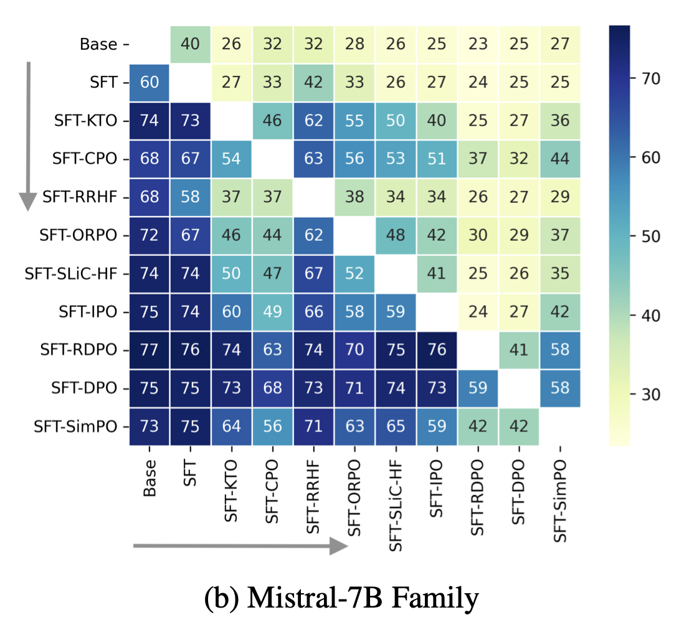
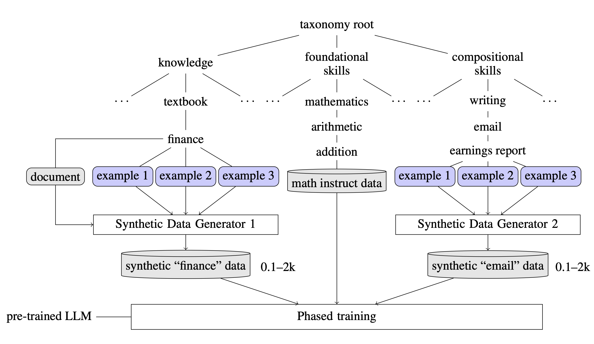
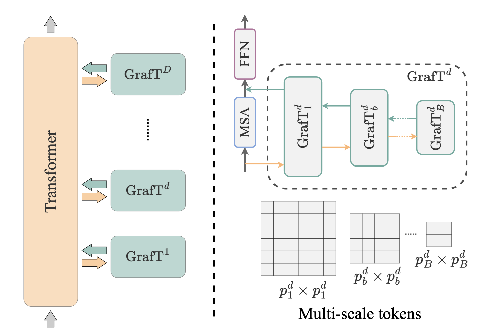

|
Shivchander Sudalairaj
I'm a Senior Research Engineer and a founding member of the AI Innovation Team at Red Hat AI and MIT-IBM Watson AI Lab in Boston. At Red Hat, I lead the research front of Synthetic Data Generation (SDG) component of RHEL AI, a platform designed to customize and operationalize large language models (LLMs) for diverse enterprise applications. My work focuses on integrating foundational models into enterprise workflows, driving innovation across Red Hat's AI product ecosystem. At IBM, I'm part of the core Alignment Team, responsible for aligning and training IBM's generative AI systems, including co-inventing key projects like InstructLab and Synderella. These efforts form the backbone of the generative AI strategy for both IBM and Red Hat.
I completed my M.S. in Computer Science at the University of Cincinnati, where I worked on spatio-temporal analysis of EEG using deep learning under the guidance of Prof. Anca Ralescu. During my undergraduate studies at the same institution, I explored fine-grained prediction of topical stance and political leaning from Twitter, earning honors like Magna Cum Laude and Dean's List recognition. My educational journey was supported by an NSF Grant, and I remain passionate about advancing the frontiers of AI and its applications in real-world contexts.
Email /
CV /
Scholar /
Twitter /
Github
|
|
Research
My research focuses on generative AI, particularly large language models (LLMs), synthetic data generation, and AI customization for enterprise applications. I am passionate about creating scalable, privacy-preserving solutions and adapting foundation models to solve real-world challenges across diverse domains.
|
|

|
CDR: Customizable Density Ratios of Strong-over-weak LLMs for Preference Annotation
Guangxuan Xu,
Kai Xu,
Shivchander Sudalairaj,
Hao Wang,
Akash Srivastava
ICLR, 2025 (Under Review)
Preference tuning of large language models (LLMs) often relies on costly human data or proprietary models. CDR (Customized Density Ratio) introduces a training-free approach that uses off-the-shelf LLMs to generate preference data by leveraging the log-density ratio between better-aligned and less-aligned models.
|
|

|
LAB: Large-Scale Alignment for ChatBots
Shivchander Sudalairaj*,
Abhishek Bhandwaldar,
Aldo Pareja,
Kai Xu,
David D. Cox,
Akash Srivastava*
LAB (Large-scale Alignment for chatBots) introduces a scalable methodology for instruction-tuning large language models (LLMs) using taxonomy-guided synthetic data generation and a multi-phase tuning framework. It reduces dependency on costly human annotations and proprietary models like GPT-4, and provides a framework for customizing small language models.
|
|

|
Grafting Vision Transformers
Jongwoo Park,
Kumara Kahatapitiya,
Donghyun Kim,
Shivchander Sudalairaj,
Quanfu Fan,
Michael S. Ryoo
IEEE/CVF Winter Conference on Applications of Computer Vision (WACV), 2024
Vision Transformers (ViTs) are state-of-the-art in computer vision, but pyramid architectures like Swin Transformer have overshadowed their advantages. This paper introduces GrafT, a simple, efficient add-on that enhances ViTs by leveraging global dependencies and multi-scale features throughout the network. GrafT delivers consistent improvements across various models, significantly boosting mobile-size models like DeiT-T (+3.9%) and MobileViT-XXS (+1.9%) on ImageNet-1k.
|
|
{kind=link}